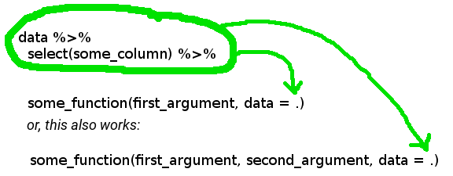

Chapter 7 Statistical models
In this chapter, we will not learn about all the models out there that you may or may not need. Instead, I will show you how can use what you have learned until now and how you can apply these concepts to modeling. Also, as you read in the beginning of the book, R has many many packages. So the model you need is most probably already implemented in some package.
7.1 Fitting a model to data
Suppose you have a variable y that you wish to explain using a set of other variables x1, x2,
x3, etc. Let’s take a look at the Housing dataset from the Ecdat package:
You can read a description of the dataset by running:
Housing package:Ecdat R Documentation
Sales Prices of Houses in the City of Windsor
Description:
a cross-section from 1987
_number of observations_ : 546
_observation_ : goods
_country_ : Canada
Usage:
data(Housing)
Format:
A dataframe containing :
price: sale price of a house
lotsize: the lot size of a property in square feet
bedrooms: number of bedrooms
bathrms: number of full bathrooms
stories: number of stories excluding basement
driveway: does the house has a driveway ?
recroom: does the house has a recreational room ?
fullbase: does the house has a full finished basement ?
gashw: does the house uses gas for hot water heating ?
airco: does the house has central air conditioning ?
garagepl: number of garage places
prefarea: is the house located in the preferred neighbourhood of the city ?
Source:
Anglin, P.M. and R. Gencay (1996) “Semiparametric estimation of
a hedonic price function”, _Journal of Applied Econometrics_,
*11(6)*, 633-648.
References:
Verbeek, Marno (2004) _A Guide to Modern Econometrics_, John Wiley
and Sons, chapter 3.
Journal of Applied Econometrics data archive : <URL:
http://qed.econ.queensu.ca/jae/>.
See Also:
‘Index.Source’, ‘Index.Economics’, ‘Index.Econometrics’,
‘Index.Observations’or by looking for Housing in the help pane of RStudio. Usually, you would take a look a the data
before doing any modeling:
## Observations: 546
## Variables: 12
## $ price <dbl> 42000, 38500, 49500, 60500, 61000, 66000, 66000, 69000, 83800, 88500, 90000, 30500, 27000, 36000,...
## $ lotsize <dbl> 5850, 4000, 3060, 6650, 6360, 4160, 3880, 4160, 4800, 5500, 7200, 3000, 1700, 2880, 3600, 3185, 3...
## $ bedrooms <dbl> 3, 2, 3, 3, 2, 3, 3, 3, 3, 3, 3, 2, 3, 3, 2, 2, 3, 4, 1, 2, 3, 4, 3, 2, 2, 2, 2, 2, 3, 3, 2, 4, 2...
## $ bathrms <dbl> 1, 1, 1, 1, 1, 1, 2, 1, 1, 2, 2, 1, 1, 1, 1, 1, 1, 1, 1, 2, 1, 2, 1, 1, 1, 1, 1, 1, 1, 1, 1, 1, 1...
## $ stories <dbl> 2, 1, 1, 2, 1, 1, 2, 3, 1, 4, 1, 1, 2, 1, 1, 1, 2, 3, 1, 1, 2, 2, 2, 1, 1, 2, 1, 1, 1, 2, 1, 2, 1...
## $ driveway <fct> yes, yes, yes, yes, yes, yes, yes, yes, yes, yes, yes, no, yes, no, yes, yes, no, yes, yes, no, y...
## $ recroom <fct> no, no, no, yes, no, yes, no, no, yes, yes, no, no, no, no, no, no, no, no, no, yes, yes, no, no,...
## $ fullbase <fct> yes, no, no, no, no, yes, yes, no, yes, no, yes, no, no, no, no, no, no, no, no, yes, yes, yes, n...
## $ gashw <fct> no, no, no, no, no, no, no, no, no, no, no, no, no, no, no, no, no, no, no, no, no, no, no, no, n...
## $ airco <fct> no, no, no, no, no, yes, no, no, no, yes, yes, no, no, no, no, yes, no, no, no, no, yes, no, yes,...
## $ garagepl <dbl> 1, 0, 0, 0, 0, 0, 2, 0, 0, 1, 3, 0, 0, 0, 0, 0, 1, 0, 0, 1, 1, 0, 0, 0, 0, 0, 0, 0, 0, 0, 0, 2, 0...
## $ prefarea <fct> no, no, no, no, no, no, no, no, no, no, no, no, no, no, no, no, no, no, no, no, no, no, no, no, n...Housing prices depend on a set of variables such as the number of bedrooms, the area it is located
and so on. If you believe that housing prices depend linearly on a set of explanatory variables,
you will want to estimate a linear model. To estimate a linear model, you will need to use the
built-in lm() function:
lm() takes a formula as an argument, which defines the model you want to estimate. In this case,
I ran the following regression:
\[ \text{price} = \alpha + \beta_1 * \text{lotsize} + \beta_2 * \text{bedrooms} + \varepsilon \]
where \(alpha, beta_1\) and \(beta_2\) are three parameters to estimate. To take a look at the
results, you can use the summary() method (not to be confused with dplyr::summarise():
##
## Call:
## lm(formula = price ~ lotsize + bedrooms, data = Housing)
##
## Residuals:
## Min 1Q Median 3Q Max
## -65665 -12498 -2075 8970 97205
##
## Coefficients:
## Estimate Std. Error t value Pr(>|t|)
## (Intercept) 5.613e+03 4.103e+03 1.368 0.172
## lotsize 6.053e+00 4.243e-01 14.265 < 2e-16 ***
## bedrooms 1.057e+04 1.248e+03 8.470 2.31e-16 ***
## ---
## Signif. codes: 0 '***' 0.001 '**' 0.01 '*' 0.05 '.' 0.1 ' ' 1
##
## Residual standard error: 21230 on 543 degrees of freedom
## Multiple R-squared: 0.3703, Adjusted R-squared: 0.3679
## F-statistic: 159.6 on 2 and 543 DF, p-value: < 2.2e-16if you wish to remove the intercept (\(alpha\)) from your model, you can do so with -1:
##
## Call:
## lm(formula = price ~ -1 + lotsize + bedrooms, data = Housing)
##
## Residuals:
## Min 1Q Median 3Q Max
## -67229 -12342 -1333 9627 95509
##
## Coefficients:
## Estimate Std. Error t value Pr(>|t|)
## lotsize 6.283 0.390 16.11 <2e-16 ***
## bedrooms 11968.362 713.194 16.78 <2e-16 ***
## ---
## Signif. codes: 0 '***' 0.001 '**' 0.01 '*' 0.05 '.' 0.1 ' ' 1
##
## Residual standard error: 21250 on 544 degrees of freedom
## Multiple R-squared: 0.916, Adjusted R-squared: 0.9157
## F-statistic: 2965 on 2 and 544 DF, p-value: < 2.2e-16or if you want to use all the columns inside Housing:
##
## Call:
## lm(formula = price ~ ., data = Housing)
##
## Residuals:
## Min 1Q Median 3Q Max
## -41389 -9307 -591 7353 74875
##
## Coefficients:
## Estimate Std. Error t value Pr(>|t|)
## (Intercept) -4038.3504 3409.4713 -1.184 0.236762
## lotsize 3.5463 0.3503 10.124 < 2e-16 ***
## bedrooms 1832.0035 1047.0002 1.750 0.080733 .
## bathrms 14335.5585 1489.9209 9.622 < 2e-16 ***
## stories 6556.9457 925.2899 7.086 4.37e-12 ***
## drivewayyes 6687.7789 2045.2458 3.270 0.001145 **
## recroomyes 4511.2838 1899.9577 2.374 0.017929 *
## fullbaseyes 5452.3855 1588.0239 3.433 0.000642 ***
## gashwyes 12831.4063 3217.5971 3.988 7.60e-05 ***
## aircoyes 12632.8904 1555.0211 8.124 3.15e-15 ***
## garagepl 4244.8290 840.5442 5.050 6.07e-07 ***
## prefareayes 9369.5132 1669.0907 5.614 3.19e-08 ***
## ---
## Signif. codes: 0 '***' 0.001 '**' 0.01 '*' 0.05 '.' 0.1 ' ' 1
##
## Residual standard error: 15420 on 534 degrees of freedom
## Multiple R-squared: 0.6731, Adjusted R-squared: 0.6664
## F-statistic: 99.97 on 11 and 534 DF, p-value: < 2.2e-16You can access different elements of model3 (for example) with $, because the result of lm()
is a list:
## (Intercept) lotsize bedrooms bathrms stories drivewayyes recroomyes fullbaseyes gashwyes
## -4038.350425 3.546303 1832.003466 14335.558468 6556.945711 6687.778890 4511.283826 5452.385539 12831.406266
## aircoyes garagepl prefareayes
## 12632.890405 4244.829004 9369.513239but I prefer to use the broom package, and more specifically the tidy() function, which
converts model3 into a neat data.frame:
## Observations: 12
## Variables: 5
## $ term <chr> "(Intercept)", "lotsize", "bedrooms", "bathrms", "stories", "drivewayyes", "recroomyes", "fullba...
## $ estimate <dbl> -4038.350425, 3.546303, 1832.003466, 14335.558468, 6556.945711, 6687.778890, 4511.283826, 5452.3...
## $ std.error <dbl> 3409.4713, 0.3503, 1047.0002, 1489.9209, 925.2899, 2045.2458, 1899.9577, 1588.0239, 3217.5971, 1...
## $ statistic <dbl> -1.184451, 10.123618, 1.749764, 9.621691, 7.086369, 3.269914, 2.374413, 3.433440, 3.987885, 8.12...
## $ p.value <dbl> 2.367616e-01, 3.732442e-22, 8.073341e-02, 2.570369e-20, 4.374046e-12, 1.145151e-03, 1.792936e-02...this is useful, because you can then work on the results easily, for example if you wish to only keep results that are significant at the 5% level:
## # A tibble: 10 x 5
## term estimate std.error statistic p.value
## <chr> <dbl> <dbl> <dbl> <dbl>
## 1 lotsize 3.55 0.350 10.1 3.73e-22
## 2 bathrms 14336. 1490. 9.62 2.57e-20
## 3 stories 6557. 925. 7.09 4.37e-12
## 4 drivewayyes 6688. 2045. 3.27 1.15e- 3
## 5 recroomyes 4511. 1900. 2.37 1.79e- 2
## 6 fullbaseyes 5452. 1588. 3.43 6.42e- 4
## 7 gashwyes 12831. 3218. 3.99 7.60e- 5
## 8 aircoyes 12633. 1555. 8.12 3.15e-15
## 9 garagepl 4245. 841. 5.05 6.07e- 7
## 10 prefareayes 9370. 1669. 5.61 3.19e- 8You can even add new columns, such as the confidence intervals:
## # A tibble: 12 x 7
## term estimate std.error statistic p.value conf.low conf.high
## <chr> <dbl> <dbl> <dbl> <dbl> <dbl> <dbl>
## 1 (Intercept) -4038. 3409. -1.18 2.37e- 1 -10736. 2659.
## 2 lotsize 3.55 0.350 10.1 3.73e-22 2.86 4.23
## 3 bedrooms 1832. 1047. 1.75 8.07e- 2 -225. 3889.
## 4 bathrms 14336. 1490. 9.62 2.57e-20 11409. 17262.
## 5 stories 6557. 925. 7.09 4.37e-12 4739. 8375.
## 6 drivewayyes 6688. 2045. 3.27 1.15e- 3 2670. 10705.
## 7 recroomyes 4511. 1900. 2.37 1.79e- 2 779. 8244.
## 8 fullbaseyes 5452. 1588. 3.43 6.42e- 4 2333. 8572.
## 9 gashwyes 12831. 3218. 3.99 7.60e- 5 6511. 19152.
## 10 aircoyes 12633. 1555. 8.12 3.15e-15 9578. 15688.
## 11 garagepl 4245. 841. 5.05 6.07e- 7 2594. 5896.
## 12 prefareayes 9370. 1669. 5.61 3.19e- 8 6091. 12648.Going back to model estimation, you can of course use lm() in a pipe workflow:
## # A tibble: 10 x 5
## term estimate std.error statistic p.value
## <chr> <dbl> <dbl> <dbl> <dbl>
## 1 (Intercept) 3025. 3263. 0.927 3.54e- 1
## 2 lotsize 3.67 0.363 10.1 4.52e-22
## 3 bedrooms 4140. 1036. 3.99 7.38e- 5
## 4 bathrms 16443. 1546. 10.6 4.29e-24
## 5 recroomyes 5660. 2010. 2.82 5.05e- 3
## 6 fullbaseyes 2241. 1618. 1.38 1.67e- 1
## 7 gashwyes 13568. 3411. 3.98 7.93e- 5
## 8 aircoyes 15578. 1597. 9.75 8.53e-21
## 9 garagepl 4232. 883. 4.79 2.12e- 6
## 10 prefareayes 10729. 1753. 6.12 1.81e- 9The first . in the lm() function is used to indicate that we wish to use all the data from Housing
(minus driveway and stories which I removed using select() and the - sign), and the second . is
used to place the result from the two dplyr instructions that preceded is to be placed there.
The picture below should help you understand:

You have to specify this, because by default, when using %>% the left hand side argument gets
passed as the first argument of the function on the right hand side.
7.2 Diagnostics
Diagnostics are useful metrics to assess model fit. You can read some of these diagnostics, such as
the \(R^2\) at the bottom of the summary (when running summary(my_model)), but if you want to do
more than simply reading these diagnostics from RStudio, you can put those in a data.frame too,
using broom::glance():
## # A tibble: 1 x 11
## r.squared adj.r.squared sigma statistic p.value df logLik AIC BIC deviance df.residual
## * <dbl> <dbl> <dbl> <dbl> <dbl> <int> <dbl> <dbl> <dbl> <dbl> <int>
## 1 0.673 0.666 15423. 100.0 6.18e-122 12 -6034. 12094. 12150. 127025071644. 534You can also plot the usual diagnostics plots using ggfortify::autoplot() which uses the
ggplot2 package under the hood:

which=1:6 is an additional option that shows you all the diagnostics plot. If you omit this
option, you will only get 4 of them.
You can also get the residuals of the regression in two ways; either you grab them directly from the model fit:
or you can augment the original data with a residuals column, using broom::augment():
Let’s take a look at housing_aug:
## Observations: 546
## Variables: 19
## $ price <dbl> 42000, 38500, 49500, 60500, 61000, 66000, 66000, 69000, 83800, 88500, 90000, 30500, 27000, 3600...
## $ lotsize <dbl> 5850, 4000, 3060, 6650, 6360, 4160, 3880, 4160, 4800, 5500, 7200, 3000, 1700, 2880, 3600, 3185,...
## $ bedrooms <dbl> 3, 2, 3, 3, 2, 3, 3, 3, 3, 3, 3, 2, 3, 3, 2, 2, 3, 4, 1, 2, 3, 4, 3, 2, 2, 2, 2, 2, 3, 3, 2, 4,...
## $ bathrms <dbl> 1, 1, 1, 1, 1, 1, 2, 1, 1, 2, 2, 1, 1, 1, 1, 1, 1, 1, 1, 2, 1, 2, 1, 1, 1, 1, 1, 1, 1, 1, 1, 1,...
## $ stories <dbl> 2, 1, 1, 2, 1, 1, 2, 3, 1, 4, 1, 1, 2, 1, 1, 1, 2, 3, 1, 1, 2, 2, 2, 1, 1, 2, 1, 1, 1, 2, 1, 2,...
## $ driveway <fct> yes, yes, yes, yes, yes, yes, yes, yes, yes, yes, yes, no, yes, no, yes, yes, no, yes, yes, no,...
## $ recroom <fct> no, no, no, yes, no, yes, no, no, yes, yes, no, no, no, no, no, no, no, no, no, yes, yes, no, n...
## $ fullbase <fct> yes, no, no, no, no, yes, yes, no, yes, no, yes, no, no, no, no, no, no, no, no, yes, yes, yes,...
## $ gashw <fct> no, no, no, no, no, no, no, no, no, no, no, no, no, no, no, no, no, no, no, no, no, no, no, no,...
## $ airco <fct> no, no, no, no, no, yes, no, no, no, yes, yes, no, no, no, no, yes, no, no, no, no, yes, no, ye...
## $ garagepl <dbl> 1, 0, 0, 0, 0, 0, 2, 0, 0, 1, 3, 0, 0, 0, 0, 0, 1, 0, 0, 1, 1, 0, 0, 0, 0, 0, 0, 0, 0, 0, 0, 2,...
## $ prefarea <fct> no, no, no, no, no, no, no, no, no, no, no, no, no, no, no, no, no, no, no, no, no, no, no, no,...
## $ .fitted <dbl> 66037.98, 41391.15, 39889.63, 63689.09, 49760.43, 66387.12, 77632.15, 56904.45, 56023.87, 10393...
## $ .se.fit <dbl> 1790.507, 1406.500, 1534.102, 2262.056, 1567.689, 2366.755, 2241.869, 1621.799, 2061.425, 2633....
## $ .resid <dbl> -24037.9757, -2891.1515, 9610.3699, -3189.0873, 11239.5735, -387.1232, -11632.1463, 12095.5452,...
## $ .hat <dbl> 0.013477335, 0.008316321, 0.009893730, 0.021510891, 0.010331701, 0.023548245, 0.021128667, 0.01...
## $ .sigma <dbl> 15402.01, 15437.14, 15431.98, 15437.02, 15429.89, 15437.64, 15429.25, 15428.66, 15389.84, 15422...
## $ .cooksd <dbl> 2.803214e-03, 2.476265e-05, 3.265481e-04, 8.004787e-05, 4.668343e-04, 1.296659e-06, 1.045228e-0...
## $ .std.resid <dbl> -1.56917096, -0.18823924, 0.62621736, -0.20903274, 0.73253926, -0.02540093, -0.76229480, 0.7886...A few columns have been added to the original data, among them .resid which contains the
residuals. Let’s plot them:

Fitted values are also added to the original data, under the variable .fitted. It would also have
been possible to get the fitted values with:
but I prefer using augment(), because the columns get merged to the original data, which then
makes it easier to find specific individuals, for example, you might want to know for which housing
units the model underestimates the price:
we find 261 individuals where the residuals are positive. It is also easier to extract outliers:
## Observations: 6
## Variables: 20
## $ price <dbl> 163000, 125000, 132000, 175000, 190000, 174500
## $ lotsize <dbl> 7420, 4320, 3500, 9960, 7420, 7500
## $ bedrooms <dbl> 4, 3, 4, 3, 4, 4
## $ bathrms <dbl> 1, 1, 2, 2, 2, 2
## $ stories <dbl> 2, 2, 2, 2, 3, 2
## $ driveway <fct> yes, yes, yes, yes, yes, yes
## $ recroom <fct> yes, no, no, no, no, no
## $ fullbase <fct> yes, yes, no, yes, no, yes
## $ gashw <fct> no, yes, yes, no, no, no
## $ airco <fct> yes, no, no, no, yes, yes
## $ garagepl <dbl> 2, 2, 2, 2, 2, 3
## $ prefarea <fct> no, no, no, yes, yes, yes
## $ .fitted <dbl> 94826.68, 77688.37, 85495.58, 108563.18, 115125.03, 118549.00
## $ .se.fit <dbl> 2520.691, 3551.954, 3544.961, 2589.680, 2185.603, 2586.007
## $ .resid <dbl> 68173.32, 47311.63, 46504.42, 66436.82, 74874.97, 55951.00
## $ .hat <dbl> 0.02671105, 0.05303793, 0.05282929, 0.02819317, 0.02008141, 0.02811326
## $ .sigma <dbl> 15144.70, 15293.34, 15298.27, 15159.14, 15085.99, 15240.66
## $ .cooksd <dbl> 0.04590995, 0.04637969, 0.04461464, 0.04616068, 0.04107317, 0.03264121
## $ .std.resid <dbl> 4.480428, 3.152300, 3.098176, 4.369631, 4.904193, 3.679815
## $ prank <dbl> 0.9963370, 1.0000000, 0.9945055, 0.9981685, 0.9926740, 0.9908425prank is a variable I created with cume_dist() which is a dplyr function that returns the
proportion of all values less than or equal to the current rank. For example:
## [1] 1.0000000 0.8571429 0.7142857 0.5714286 0.4285714 0.2857143 0.1428571by filtering prank > 0.99 we get the top 1% of outliers according to Cook’s distance.
7.3 Interpreting models
Model interpretation is essential in the social sciences. If one wants to know the effect of
variable x on the dependent variable y, marginal effects have to be computed. This is easily
done in R with the margins package, which aims to provide the same functionality as the
margins command in STATA:
## factor AME SE z p lower upper
## aircoyes 12632.8904 1555.0329 8.1239 0.0000 9585.0819 15680.6989
## bathrms 14335.5585 1482.9885 9.6667 0.0000 11428.9545 17242.1624
## bedrooms 1832.0035 1045.6558 1.7520 0.0798 -217.4442 3881.4512
## drivewayyes 6687.7789 2045.2636 3.2699 0.0011 2679.1359 10696.4219
## fullbaseyes 5452.3855 1587.9782 3.4335 0.0006 2340.0054 8564.7657
## garagepl 4244.8290 847.2173 5.0103 0.0000 2584.3136 5905.3444
## gashwyes 12831.4063 3217.6211 3.9879 0.0001 6524.9848 19137.8277
## lotsize 3.5463 0.3503 10.1250 0.0000 2.8598 4.2328
## prefareayes 9369.5132 1669.1034 5.6135 0.0000 6098.1307 12640.8957
## recroomyes 4511.2838 1899.9255 2.3745 0.0176 787.4982 8235.0694
## stories 6556.9457 924.4211 7.0930 0.0000 4745.1137 8368.7777It is also possible to plot the results:

This uses the basic R plotting capabilities, which is useful because it is a simple call to the
function plot() but if you’ve been using ggplot2 and want this graph to have the same feel as
the others made with ggplot2 you first need to save the summary in a variable.
summary(effects_model3) is a data.frame with many more details. Let’s overwrite this
effects_model3 with its summary:
And now it is possible to use ggplot2 to have the same plot:
ggplot(data = effects_model3) +
geom_point(aes(factor, AME)) +
geom_errorbar(aes(x = factor, ymin = lower, ymax = upper)) +
geom_hline(yintercept = 0) +
theme_minimal() +
theme(axis.text.x = element_text(angle = 45))
Of course for model3, the marginal effects are the same as the coefficients, so let’s estimate a
logit model and compute the marginal effects. Logit models can be estimated using the glm() function.
As an example, we are going to use the Participation data, also from the Ecdat package:
Participation package:Ecdat R Documentation
Labor Force Participation
Description:
a cross-section
_number of observations_ : 872
_observation_ : individuals
_country_ : Switzerland
Usage:
data(Participation)
Format:
A dataframe containing :
lfp labour force participation ?
lnnlinc the log of nonlabour income
age age in years divided by 10
educ years of formal education
nyc the number of young children (younger than 7)
noc number of older children
foreign foreigner ?
Source:
Gerfin, Michael (1996) “Parametric and semiparametric estimation
of the binary response”, _Journal of Applied Econometrics_,
*11(3)*, 321-340.
References:
Davidson, R. and James G. MacKinnon (2004) _Econometric Theory
and Methods_, New York, Oxford University Press, <URL:
http://www.econ.queensu.ca/ETM/>, chapter 11.
Journal of Applied Econometrics data archive : <URL:
http://qed.econ.queensu.ca/jae/>.
See Also:
‘Index.Source’, ‘Index.Economics’, ‘Index.Econometrics’,
‘Index.Observations’The variable of interest is lfp: whether the individual participates in the labour force. To know which variables are relevant in the decision to participate in the labour force, one could estimate a logit model, using glm().
logit_participation = glm(lfp ~ ., data = Participation, family = "binomial")
tidy(logit_participation)## # A tibble: 7 x 5
## term estimate std.error statistic p.value
## <chr> <dbl> <dbl> <dbl> <dbl>
## 1 (Intercept) 10.4 2.17 4.79 1.69e- 6
## 2 lnnlinc -0.815 0.206 -3.97 7.31e- 5
## 3 age -0.510 0.0905 -5.64 1.72e- 8
## 4 educ 0.0317 0.0290 1.09 2.75e- 1
## 5 nyc -1.33 0.180 -7.39 1.51e-13
## 6 noc -0.0220 0.0738 -0.298 7.66e- 1
## 7 foreignyes 1.31 0.200 6.56 5.38e-11From the results above, one can only interpret the sign of the coefficients. To know how much a
variable influences the labour force participation, one has to use margins():
effects_logit_participation = margins(logit_participation) %>%
summary()
print(effects_logit_participation)## factor AME SE z p lower upper
## age -0.1064 0.0176 -6.0494 0.0000 -0.1409 -0.0719
## educ 0.0066 0.0060 1.0955 0.2733 -0.0052 0.0185
## foreignyes 0.2834 0.0399 7.1102 0.0000 0.2053 0.3615
## lnnlinc -0.1699 0.0415 -4.0994 0.0000 -0.2512 -0.0887
## noc -0.0046 0.0154 -0.2981 0.7656 -0.0347 0.0256
## nyc -0.2775 0.0333 -8.3433 0.0000 -0.3426 -0.2123We can use the previous code to plot the marginal effects:
ggplot(data = effects_logit_participation) +
geom_point(aes(factor, AME)) +
geom_errorbar(aes(x = factor, ymin = lower, ymax = upper)) +
geom_hline(yintercept = 0) +
theme_minimal() +
theme(axis.text.x = element_text(angle = 45))
So an infinitesimal increase, in say, non-labour income (lnnlinc) of 0.001 is associated with a decrease of the probability of labour force participation by 0.001*17 percentage points.
You can also extract the marginal effects of a single variable:
## dydx_lnnlinc
## 1 -0.15667764
## 2 -0.20014487
## 3 -0.18495109
## 4 -0.05377262
## 5 -0.18710476
## 6 -0.19586986Which makes it possible to extract the effect for a list of individuals that you can create yourself:
my_subjects = tribble(
~lfp, ~lnnlinc, ~age, ~educ, ~nyc, ~noc, ~foreign,
"yes", 10.780, 7.0, 4, 1, 1, "yes",
"no", 1.30, 9.0, 1, 4, 1, "yes"
)
dydx(my_subjects, logit_participation, "lnnlinc")## dydx_lnnlinc
## 1 -0.09228119
## 2 -0.17953451I used the tribble() function from the tibble package to create this test data set, row by row.
Then, using dydx(), I get the marginal effect of variable lnnlinc for these two individuals.
7.4 Comparing models
Let’s estimate another model on the same data; prices are only positive, so a linear regression might not be the best model, because the model allows for negative prices. Let’s look at the distribution of prices:

it looks like modeling the log of price might provide a better fit:
## # A tibble: 12 x 5
## term estimate std.error statistic p.value
## <chr> <dbl> <dbl> <dbl> <dbl>
## 1 (Intercept) 10.0 0.0472 212. 0.
## 2 lotsize 0.0000506 0.00000485 10.4 2.91e-23
## 3 bedrooms 0.0340 0.0145 2.34 1.94e- 2
## 4 bathrms 0.168 0.0206 8.13 3.10e-15
## 5 stories 0.0923 0.0128 7.20 2.10e-12
## 6 drivewayyes 0.131 0.0283 4.61 5.04e- 6
## 7 recroomyes 0.0735 0.0263 2.79 5.42e- 3
## 8 fullbaseyes 0.0994 0.0220 4.52 7.72e- 6
## 9 gashwyes 0.178 0.0446 4.00 7.22e- 5
## 10 aircoyes 0.178 0.0215 8.26 1.14e-15
## 11 garagepl 0.0508 0.0116 4.36 1.58e- 5
## 12 prefareayes 0.127 0.0231 5.50 6.02e- 8Let’s take a look at the diagnostics:
## # A tibble: 1 x 11
## r.squared adj.r.squared sigma statistic p.value df logLik AIC BIC deviance df.residual
## * <dbl> <dbl> <dbl> <dbl> <dbl> <int> <dbl> <dbl> <dbl> <dbl> <int>
## 1 0.677 0.670 0.214 102. 3.67e-123 12 73.9 -122. -65.8 24.4 534Let’s compare these to the ones from the previous model:
diag_lm = glance(model3)
diag_lm = diag_lm %>%
mutate(model = "lin-lin model")
diag_log = glance(model_log)
diag_log = diag_log %>%
mutate(model = "log-lin model")
diagnostics_models = full_join(diag_lm, diag_log)## Joining, by = c("r.squared", "adj.r.squared", "sigma", "statistic", "p.value", "df", "logLik", "AIC", "BIC", "deviance", "df.residual", "model")## # A tibble: 2 x 12
## r.squared adj.r.squared sigma statistic p.value df logLik AIC BIC deviance df.residual model
## <dbl> <dbl> <dbl> <dbl> <dbl> <int> <dbl> <dbl> <dbl> <dbl> <int> <chr>
## 1 0.673 0.666 15423. 100.0 6.18e-122 12 -6034. 12094. 12150. 1.27e11 534 lin-lin m…
## 2 0.677 0.670 0.214 102. 3.67e-123 12 73.9 -122. -65.8 2.44e 1 534 log-lin m…I saved the diagnostics in two different data.frame using the glance() function and added a
model column to indicate which model the diagnostics come from. Then I merged both datasets using
full_join(), a dplyr function.
As you can see, the model with the logarithm of the prices as the explained variable has a higher likelihood (and thus lower AIC and BIC) than the simple linear model. Let’s take a look at the diagnostics plots:

7.5 Using a model for prediction
Once you estimated a model, you might want to use it for prediction. This is easily done using the
predict() function that works with most models. Prediction is also useful as a way to test the
accuracy of your model: split your data into a training set (used for estimation) and a testing
set (used for the pseudo-prediction) and see if your model overfits the data. We are going to see
how to do that in a later section; for now, let’s just get acquainted with predict().
Let’s go back to the models we estimated in the previous section, model3 and model_log. Let’s also
take a subsample of data, which we will be using for prediction:
so that we get always the same pred_set I set the random seed first. Let’s take a look at the
data:
## price lotsize bedrooms bathrms stories driveway recroom fullbase gashw airco garagepl prefarea
## 63 52000 4280 2 1 1 yes no no no yes 2 no
## 340 62500 3900 3 1 2 yes no no no no 0 no
## 332 175000 8960 4 4 4 yes no no no yes 3 no
## 339 141000 8100 4 1 2 yes yes yes no yes 2 yes
## 467 54000 2856 3 1 3 yes no no no no 0 yes
## 347 52000 4130 3 2 2 yes no no no no 2 no
## 6 66000 4160 3 1 1 yes yes yes no yes 0 no
## 126 95000 4260 4 2 2 yes no no yes no 0 no
## 359 97000 12090 4 2 2 yes no no no no 2 yes
## 277 70000 6300 3 1 1 yes no no no yes 2 no
## 372 85000 6420 3 1 1 yes no yes no yes 0 yes
## 292 39000 4000 3 1 2 yes no no no no 1 no
## 151 59900 3450 3 1 2 yes no no no no 1 no
## 493 53000 4050 2 1 1 yes no no no no 0 no
## 156 60000 2610 4 3 2 no no no no no 0 no
## 445 72500 5720 2 1 2 yes no no no yes 0 yes
## 152 35500 3000 3 1 2 no no no no no 0 no
## 142 40000 2650 3 1 2 yes no yes no no 1 no
## 99 35000 3500 2 1 1 yes yes no no no 0 no
## 123 37000 4400 2 1 1 yes no no no no 0 noIf we wish to use it for prediction, this is easily done with predict():
## 63 340 332 339 467 347 6 126 359 277 372
## 63506.66 49425.47 150689.71 106607.68 61649.59 73066.34 66387.12 79701.11 112496.42 72502.20 79260.00
## 292 151 493 156 445 152 142 99 123
## 54024.93 52074.46 41568.47 68666.08 76050.14 39546.02 54689.81 44129.28 42809.67This returns a vector of predicted prices. This can then be used to compute the Root Mean Squared Error
for instance. Let’s do it within a tidyverse pipeline:
rmse = pred_set %>%
mutate(predictions = predict(model3, .)) %>%
summarise(sqrt(sum(predictions - price)**2/n()))The root mean square error of model3 is 1666.1312666.
I also use the n() function which returns the number of observations in a group (or all the
observations, if the data is not grouped). Let’s compare model3 ’s RMSE with the one from
model_log:
rmse2 = pred_set %>%
mutate(predictions = exp(predict(model_log, .))) %>%
summarise(sqrt(sum(predictions - price)**2/n()))Don’t forget to exponentiate the predictions, remember you’re dealing with a log-linear model! model_log’s
RMSE is 1359.0392252 which is lower than model3’s. However, keep in mind that the model was estimated
on the whole data, and then the prediction quality was assessed using a subsample of the data the
model was estimated on… so actually we can’t really say if model_log’s predictions are very useful.
Of course, this is the same for model3.
In a later section we are going to learn how to do cross validation to avoid this issue.
Also another problem of what I did before, unrelated to statistics per se, is that I wanted to compute the same quantity for two different models, and did so by copy and pasting 3 lines of code. That’s not much, but if I wanted to compare 10 models, copy and paste mistakes could have sneaked in. Instead, it would have been nice to have a function that computes the RMSE and then use it on my models. We are going to learn how to write our own function and use it just like if it was another built-in R function.
7.6 Beyond linear regression
R has a lot of other built-in functions for regression, such as glm() (for Generalized Linear
Models) and nls() for (for Nonlinear Least Squares). There are also functions and additional
packages for time series, panel data, machine learning, bayesian and nonparametric methods.
Presenting everything here would take too much space, and would be pretty useless as you can find
whatever you need using an internet search engine. What you have learned until now is quite general
and should work on many type of models. To help you out, here is a list of methods and the
recommended packages that you can use:
| Model | Package | Quick example |
|---|---|---|
| Robust Linear Regression | MASS |
rlm(y ~ x, data = mydata) |
| Nonlinear Least Squares | stats2 |
nls(y ~ x1 / (1 + x2), data = mydata)3 |
| Logit | stats |
glm(y ~ x, data = mydata, family = "binomial") |
| Probit | stats |
glm(y ~ x, data = mydata, family = binomial(link = "probit")) |
| K-Means | stats |
kmeans(data, n)4 |
| PCA | stats |
prcomp(data, scale = TRUE, center = TRUE)5 |
| Multinomial Logit | mlogit |
Requires several steps of data pre-processing and formula definition, refer to the Vignette for more details. |
| Cox PH | survival |
coxph(Surv(y_time, y_status) ~ x, data = mydata)6 |
| Time series | Several, depending on your needs. | Time series in R is a vast subject that would require a very thick book to cover. You can get started with the following series of blog articles, Tidy time-series, part 1, Tidy time-series, part 2, Tidy time-series, part 3 and Tidy time-series, part 3 |
| Panel data | plm |
plm(y ~ x, data = mydata, model = "within|random") |
| Neural Networks | Several, depending on your needs. | R is a very popular programming language for machine learning. This blog post lists and compares some of the most useful packages for Neural nets and deep learning. |
| Nonparametric regression | np |
Several functions and options available, refer to the Vignette for more details. |
I put neural networks in the table, but you can also find packages for regression trees, naive
bayes, and pretty much any machine learning method out there! The same goes for Bayesian methods.
Popular packages include rstan, rjags which link R to STAN and JAGS (two other pieces of software
that do the Gibbs sampling for you) which are tools that allow you to fit very general models. It
is also possible to estimate models using Bayesian inference without the need of external tools,
with the bayesm package which estimates the usual micro-econometric models.
There really are a lot of packages available for Bayesian inference, and you can find them all in the
related CRAN Task View.
This package gets installed with R, no need to add it↩
The formula in the example is shown for illustration purposes.↩
datamust only contain numeric values, andnis the number of clusters.↩datamust only contain numeric values, or a formula can be provided.↩Surv(y_time, y_status)creates a survival object, wherey_timeis the time to eventy_status. It is possible to create more complex survival objects depending on exactly which data you are dealing with.↩